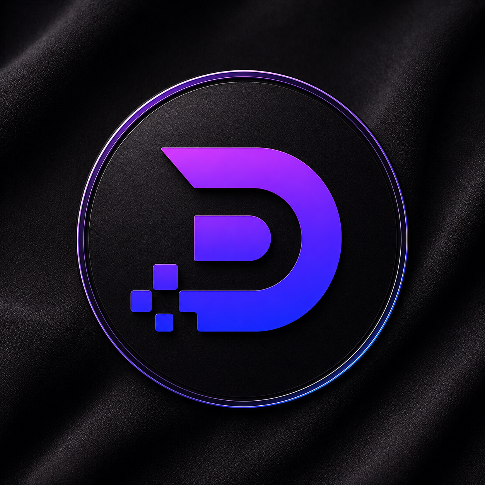
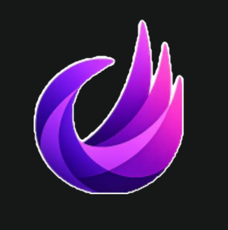
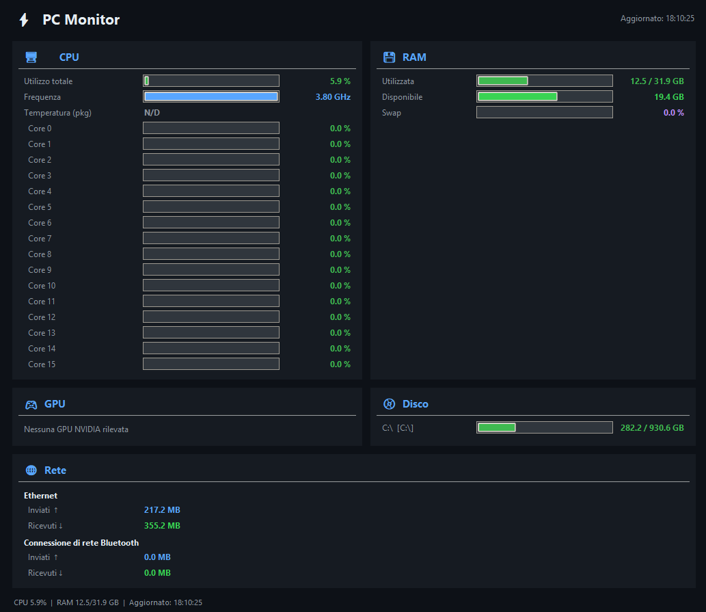
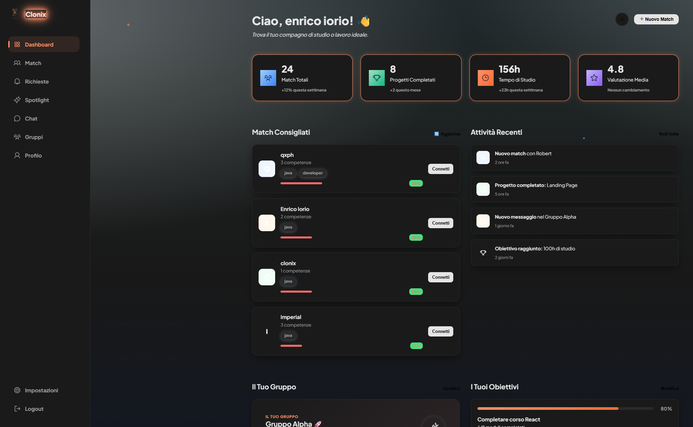
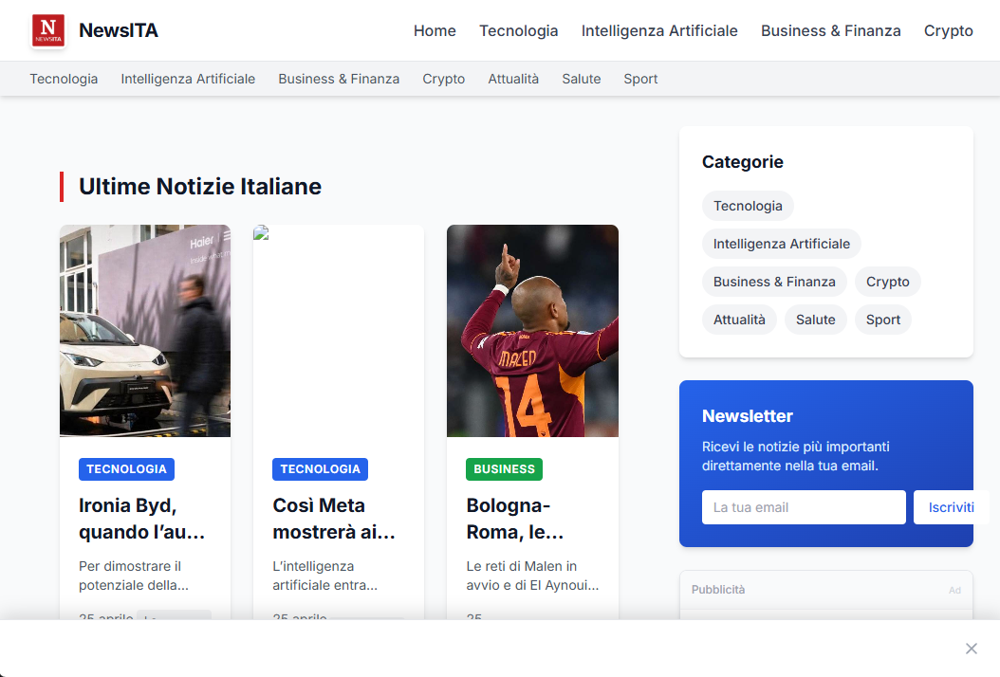
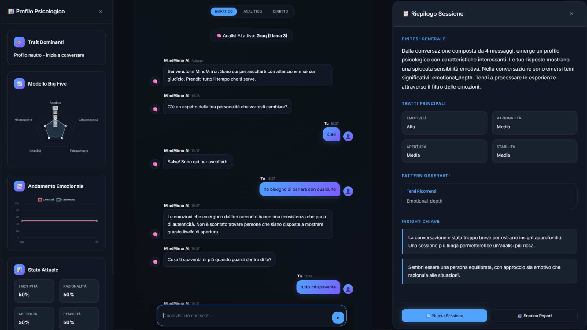
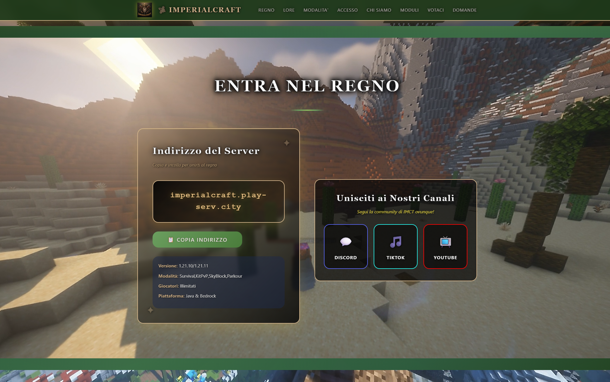
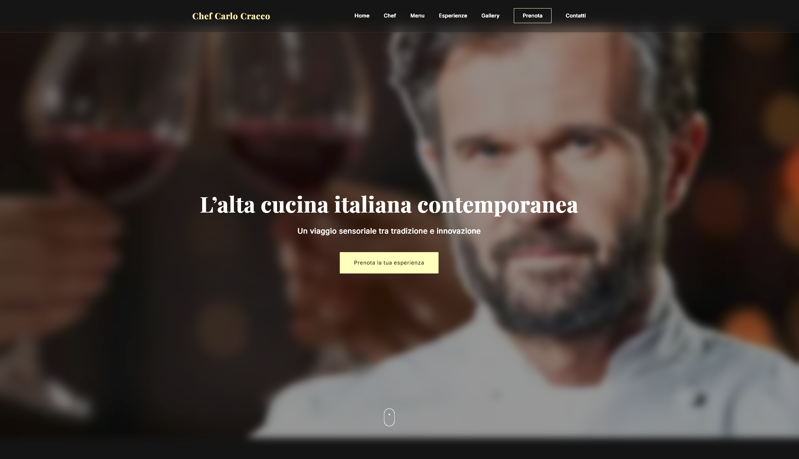
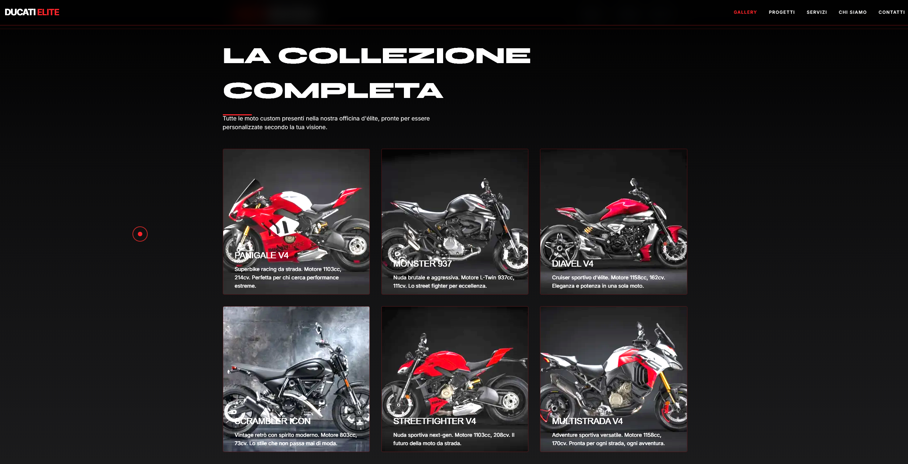
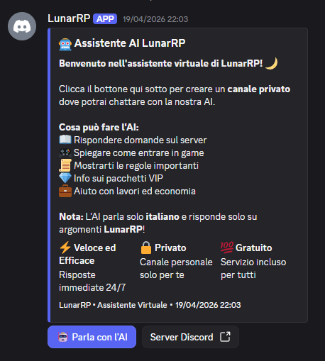

HTML5Semantica, accessibilita, SEO
95%
Disponibile per nuovi progetti freelance
Enrico Iorio
Full-Stack Developer
Creo siti web moderni, piattaforme digitali, bot e strumenti su misura. Porto disciplina, codice pulito e interfacce chiare dentro progetti concreti.
7Anni di esperienza
50Progetti completati
30Clienti soddisfatti
HTML
CSS
JS
SQL
Roma, Italia
Web, server, community, automazioni.
CreateMeDevoraImperialCraftLunarRPCloniXNewsITAMindMirrorPC MonitorSpot DucatiSpot Carlo Cracco
CreateMeDevoraImperialCraftLunarRPCloniXNewsITAMindMirrorPC MonitorSpot DucatiSpot Carlo Cracco
Biografia
Dal primo sito ai progetti completi.
2017
inizio percorso web
Sono Enrico Iorio, sviluppatore Full-Stack con sede a Roma. Ho iniziato con pagine statiche e sono arrivato a server di gioco, bot, dashboard, siti vetrina, landing commerciali e piattaforme su misura.
Lavoro come freelancer perche credo nel rapporto diretto con il cliente: preferisco costruire soluzioni accessibili, chiare e mantenibili, con supporto anche dopo la consegna.
Fuori dal codice pratico bodybuilding e kickboxing. Disciplina, pazienza e costanza non sono slogan: sono il modo in cui porto avanti anche i progetti.
✓ Siti su misura per ogni budget
✓ Codice pulito e mantenibile
✓ Supporto post-consegna
Competenze
Stack pratico, non solo parole.
HTML
CSS
JS
Java
SQL
Python
Full
Stack
Stack
CSS3Grid, responsive, animazioni
92%
JavaScriptES6+, DOM, async, interazioni
90%
JavaPlugin Minecraft, logica backend
85%
SQLMySQL e database relazionali
87%
PythonScripting, automazioni, bot
82%
Esperienza
Una timeline fatta di community, clienti e piattaforme.

2026 - OggiFounder - Devora
Realizzazione di siti web e piattaforme digitali per persone e attivita che vogliono una presenza online moderna, chiara e accessibile.
HTML/CSSJavaScriptSQL

2026Developer - CreateMe
Lavoro dentro CreateMe, azienda che crea siti web su commissione per clienti che vogliono una presenza digitale curata, moderna e personalizzata.
Web designHTML/CSSJavaScriptClienti
 2026
2026
Developer - LunarRP
Sviluppo script in Lua, gestione database e ottimizzazione performance per un server GTA RP su FiveM.
LuaPHPMySQL
 2019 - 2025
2019 - 2025
Founder - ImperialCraft
Server Minecraft multimodalita con plugin custom in Java, bot Discord, sito integrato e community attiva.
JavaPythonNode.js

2018 - OggiWeb Developer Freelance
Siti web per attivita commerciali, ristoranti, server di gioco e professionisti: dal sito vetrina alle app piu complesse.
HTML/CSSJavaScriptPHP
Primi passi con Unity
Esperimenti con Unity 3D e C#, utili per imparare logica di programmazione e gestione di esperienze interattive.
C#Unity
Progetti
Tutti i lavori in un unico spazio.
Una sezione sola, con card da scorrere, immagini in movimento e un archivio compatto dei progetti a cui ho lavorato.
Developer / Siti su commissione
CreateMe
Azienda dove lavoro oggi: realizziamo siti web su commissione per clienti che vogliono un risultato moderno, chiaro e personalizzato.
Founder / Web studio
Devora
Azienda per siti web e piattaforme digitali accessibili, moderne e costruite intorno alle esigenze del cliente.
Visita sito →
Founder / Minecraft server
ImperialCraft
Server Minecraft multimodalita, community, plugin custom, bot Discord e sito web integrato.
Visita sito →
Developer / FiveM
LunarRP
Script Lua, gestione database e supporto tecnico per un server GTA RP orientato alle performance.
Visita sito →
Concept / Social app
CloniX
Concept social per matching basato sugli interessi, utile per progettare flussi, dati e interfacce piu complesse.
Visita sito →
News / Aggregatore
NewsITA
Aggregatore di notizie italiane con filtri, notifiche e interfaccia responsive per consultazione rapida.
Visita sito →
AI / Benessere
MindMirror
Esperienza che simula una seduta psicologica e organizza insight personali in una dashboard dedicata.
Visita sito →



Bot Discord
Moderazione, comandi custom e automazioni per community.
JavaScript / Node.jsPC Monitor
Applicazione desktop per temperature e performance in tempo reale.
Python / JavaScriptSpot Carlo Cracco
Pagina promozionale con focus visuale e comunicazione rapida.
HTML / CSS / JSSpot Ducati
Esperienza pubblicitaria web con immagine protagonista e CTA.
HTML / CSS / JSMetodo
Come trasformo un'idea in qualcosa che puoi usare.
Ascolto
Capisco obiettivo, pubblico, budget e contenuti reali prima di toccare il codice.
Struttura
Creo architettura, sezioni e priorita, cosi il sito non e solo bello ma chiaro.
Sviluppo
Costruisco interfacce responsive, performanti e facili da mantenere nel tempo.
Consegna
Rifinisco, pubblico e resto disponibile per miglioramenti o supporto.
Contatti
Hai un progetto in mente?
Scrivimi e lo trasformiamo in una presenza online chiara, veloce e riconoscibile.
enryyyioriox@outlook.it →